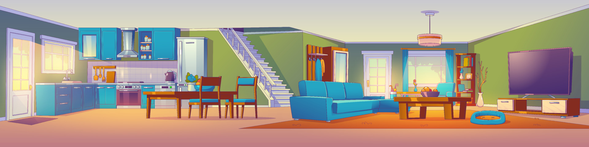

Check in is from 3 pm and check out is by 10 am.
If you find that anything is missing or you need more information about anything, please contact Michaela, Charlotte or Bob on 07794 994868, 07517464506 or 07447995915.
The thermostat is in the lounge at the bottom of the stairs, above the cupboard. This will be kept low for your arrival in the summer and warmer on cold days. Adjust to desired temperature using the dial and press the button on the top right to determine number of hours to switch on for.
Two keys are provided – front and back doors. When you depart, please leave the keys locked in the key safe.
We have a private company, Cumbria Waste, which takes away waste. They will sort through it for recyclables, so you can put everything in the bin. If you use more than one bin bag, please leave full bags, securely sealed in the bin in the back garden. Please don’t use this bin for litter which is not in a bin bag.
The hub number and password are written on the back of the hub, which is kept next to the armchair in the lounge.
These will be checked between each stay, but if you find a light or control not working during your stay, please contact us using the above numbers.
After any guest, Chapel Cottage is cleaned and checked ready for the next guest. However, we do expect you to leave the property tidy and reasonably clean. There are cleaning materials in the cupboard under the sink and in the full height-cupboard next to the backdoor, should you need to use any of them.
Please be considerate of neighbours when using, especially in the late evenings.
